IP characters as emotional anchors and cultural icons.
Blending nostalgia, consumerism, and personal identity — why these characters resonate, how they evolve, and the impact they leave on everyday life.
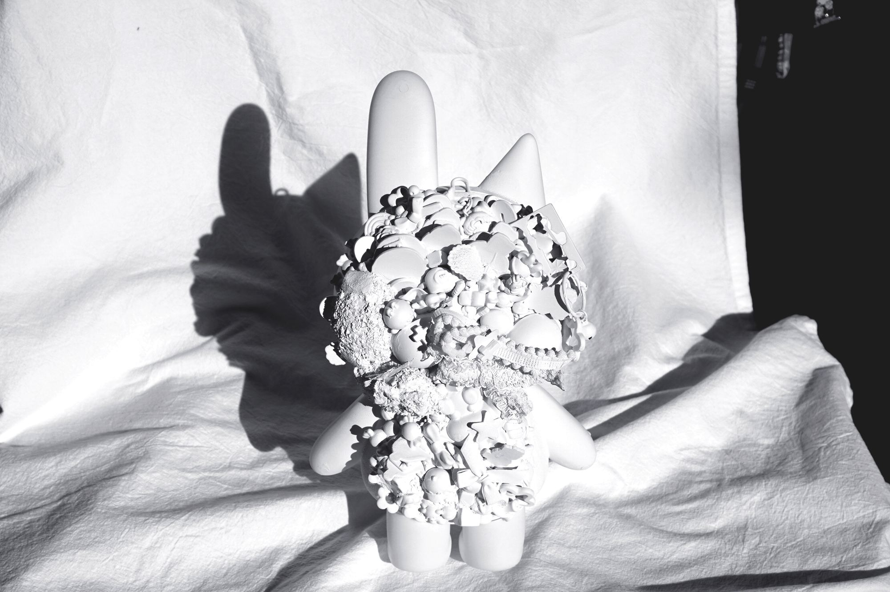
A faint smile, dot eyes, and a 1:1 head-to-body ratio — a gentle, approachable character, made real in white resin.
Step 01–02 · Create Character
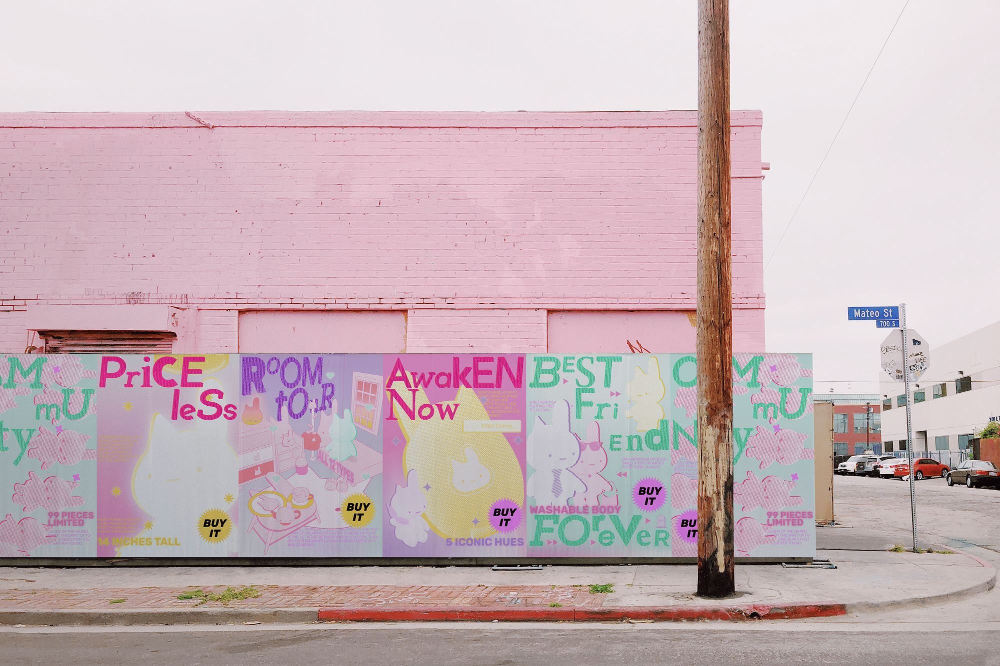
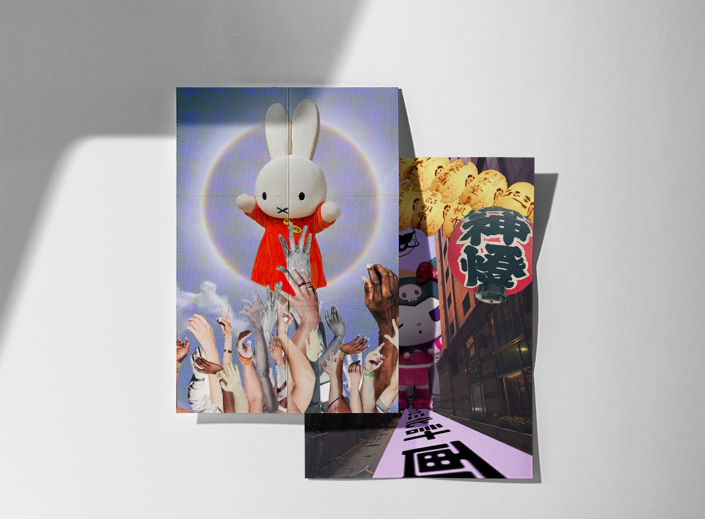
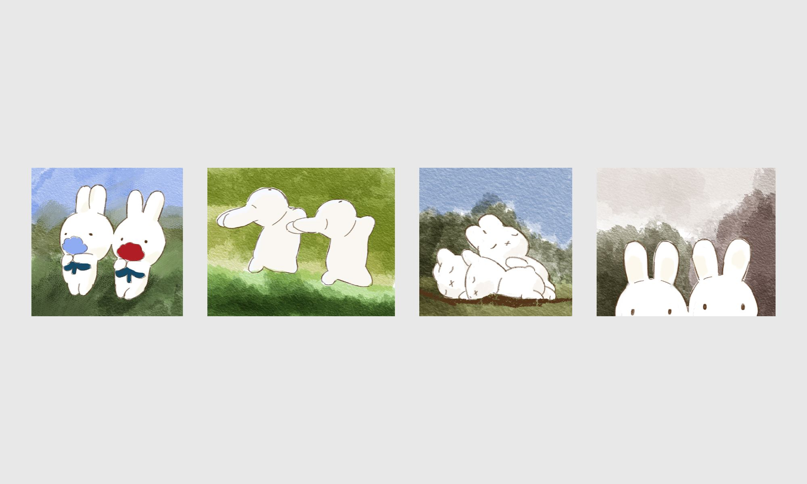
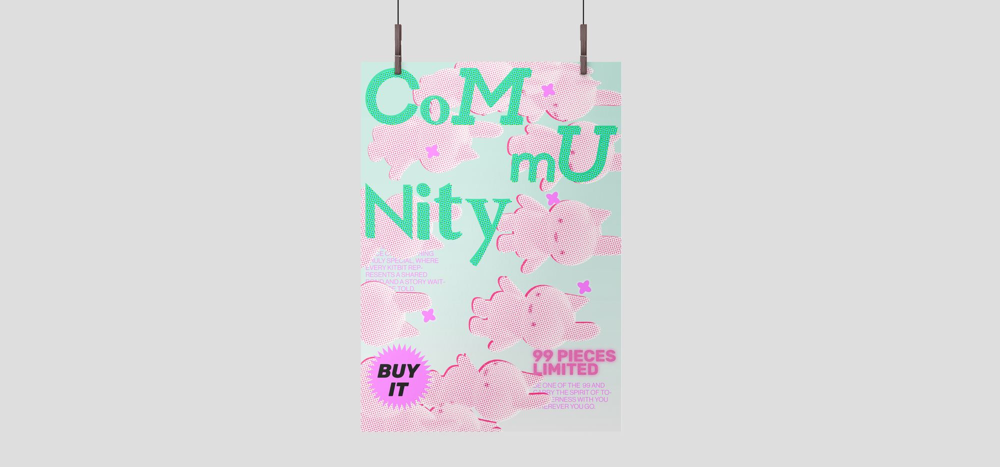
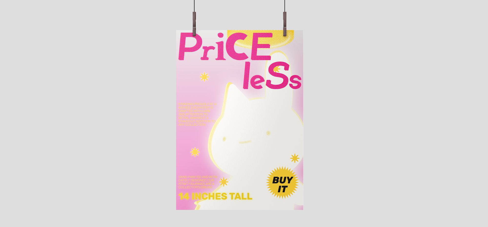
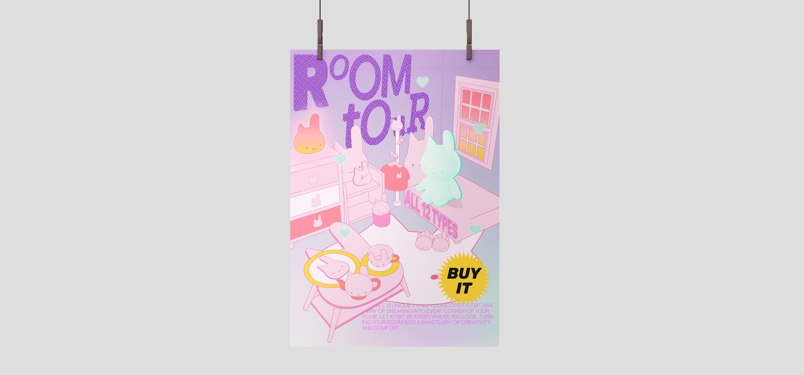
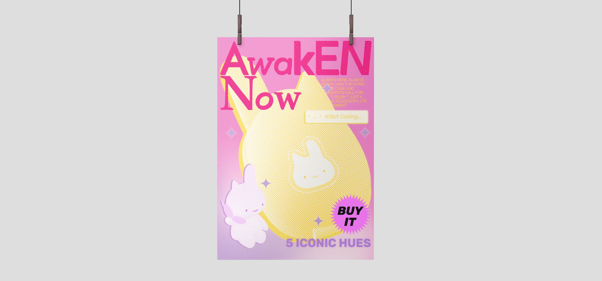
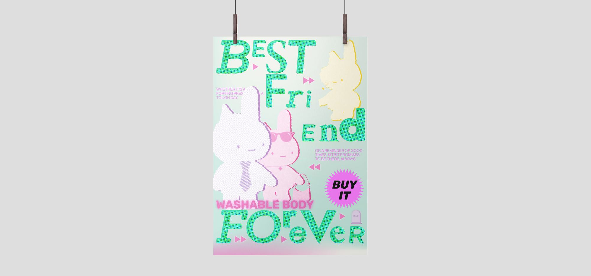
From desire and attachment to quiet disappearance.
Step 03–04 · Fate Decided
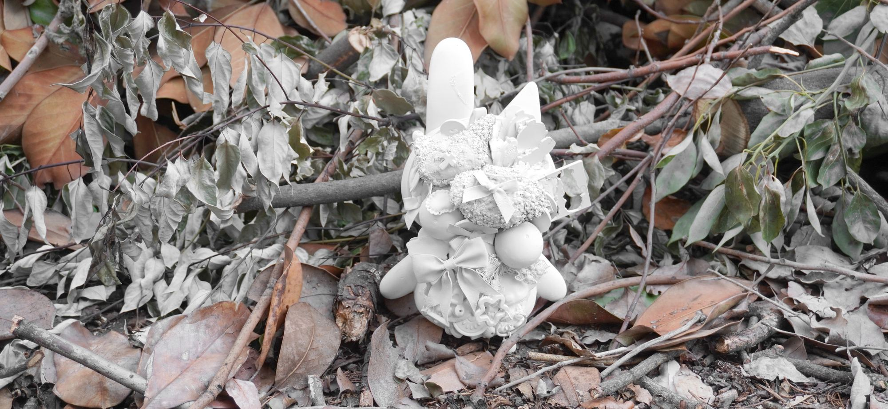
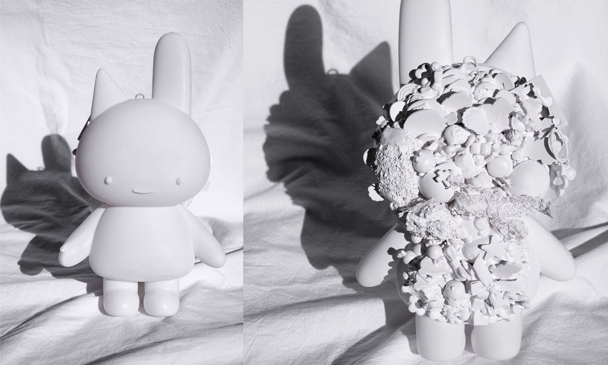
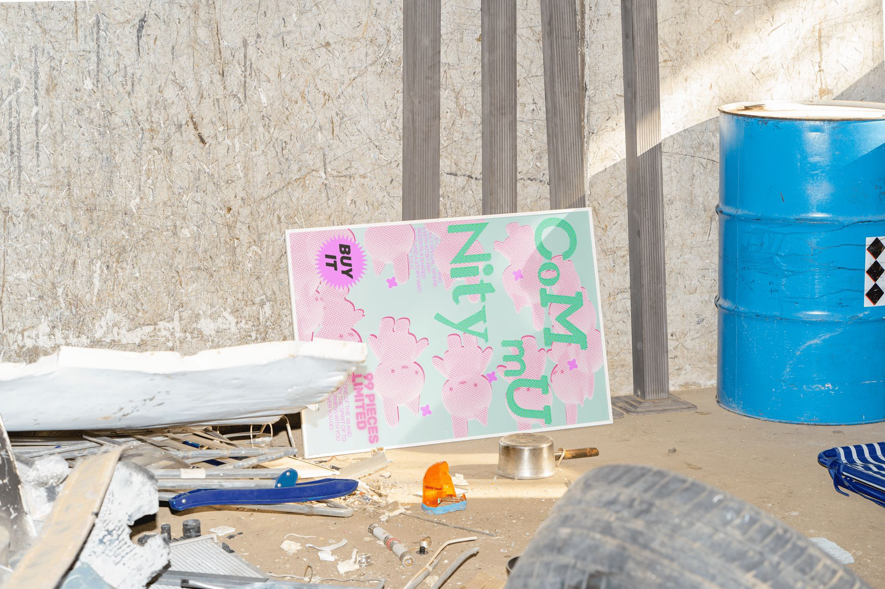
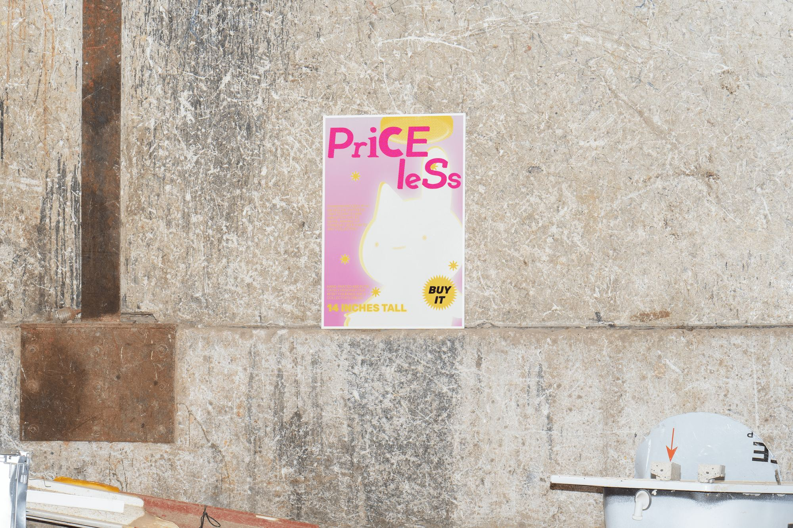
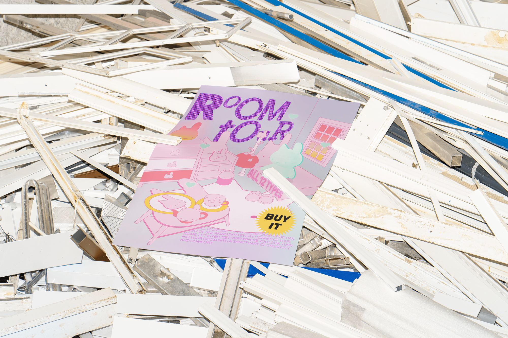
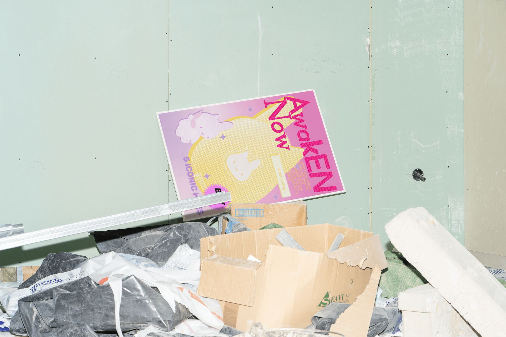
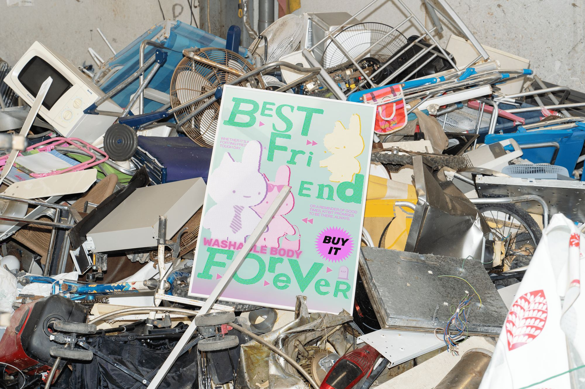
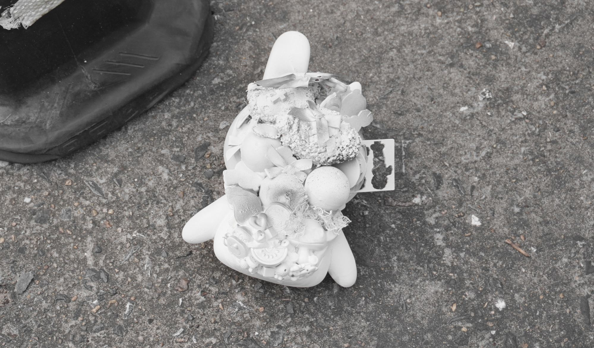
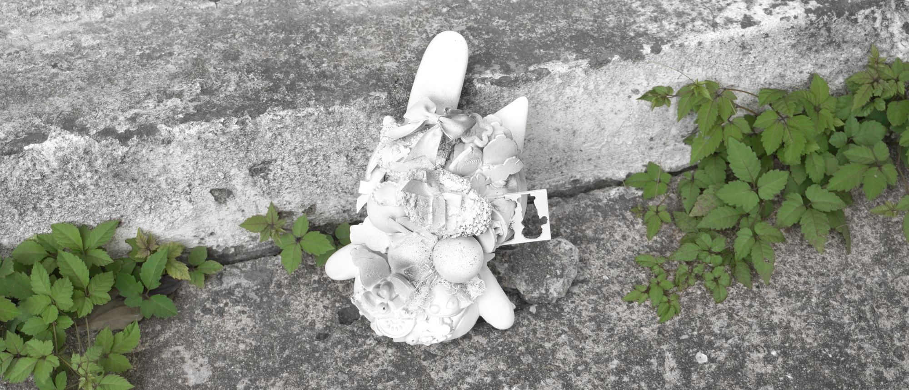
Project description
This project explores IP characters as emotional anchors and cultural icons — blending nostalgia, consumerism, and personal identity. Through research and visual storytelling, it examines why these characters resonate, how they evolve, and the lasting impact they leave on everyday life.
This project explores IP characters as emotional anchors and cultural icons — blending nostalgia, consumerism, and personal identity. Through research and visual storytelling, it examines why these characters resonate, how they evolve, and the lasting impact they leave on everyday life.
Step 01. Create Character
Kitbit is designed with a gentle, approachable language: a faint smile that mirrors the psychology of young people in the post-pandemic era; dot eyes that feel universally cute and easy to recognize; a 1:1 head-to-body ratio that pushes the character into a playful, iconic silhouette; and round hands and feet that emphasize youthfulness and innocence.
Step 02. Come to Reality
Kitbit transitions from a graphic character into a physical object through 3D printing. The model is separated into printable parts (head / torso / legs), then produced in photopolymer resin. The clean white finish reinforces a sense of sacred simplicity and quiet reverence. In the front view, the minimal surface keeps the character calm and inviting. In the back view, a collection of small accessories becomes a container for personal stories — turning Kitbit into a collective expression shaped by its community.
Step 03. Marketing Strategy
Kitbit enters stores with a clear strategy: build excitement, encourage collecting, and expand the character’s presence through serializations and media. Once purchased, it becomes a cherished collectible — or a daily companion. Over time, Kitbit “fills every corner” of the home as an object you live with. The more you care for it, the more it feels personal — adding warmth and character to your space.
Step 04. Fate Decided
Like many beloved toys, Kitbit eventually shifts from the center of attention into the background. It becomes a relic of a time — still meaningful, but stored away with memories. In a collector’s home, it may end up in a transparent bucket with other plush toys, stacked high — some visible, some slowly forgotten at the bottom. The project captures this full lifecycle: from desire and attachment to quiet disappearance.